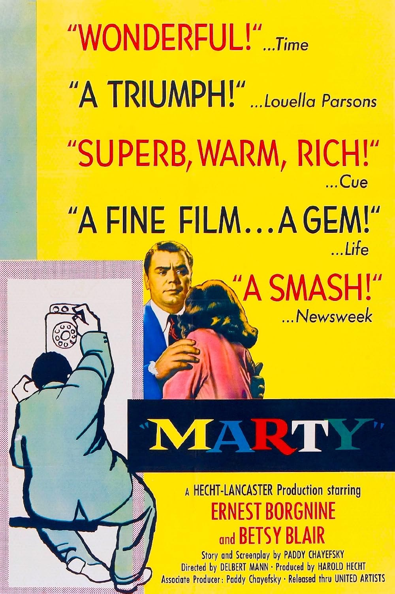

Marty
28th Academy Awards
(Oscars 1956)
8 Nominations, 4 Awards
| Nominations | ||
|---|---|---|
| Category | Nominees | Result |
| Best Motion Picture | Harold Hecht | Won |
| Actor | Ernest Borgnine | Won |
| Actor in a Supporting Role | Joe Mantell | Nominated |
| Actress in a Supporting Role | Betsy Blair | Nominated |
| Directing | Delbert Mann | Won |
| Writing (Screenplay) | Paddy Chayefsky | Won |
| Cinematography (Black-and-White) | Joseph LaShelle | Nominated |
| Art Direction (Black-and-White) | Edward S. Haworth, Robert Priestley, and Walter Simonds | Nominated |